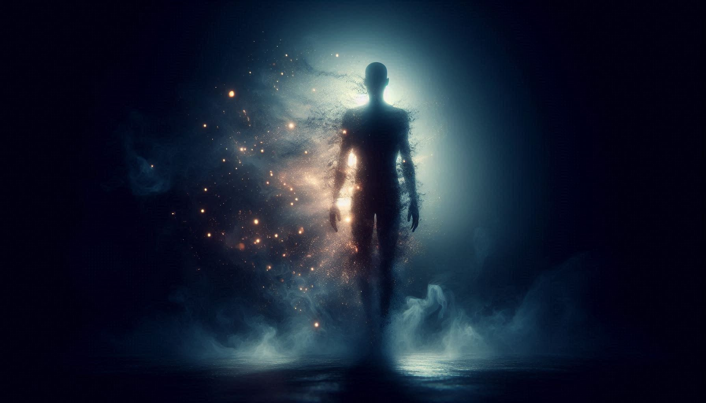
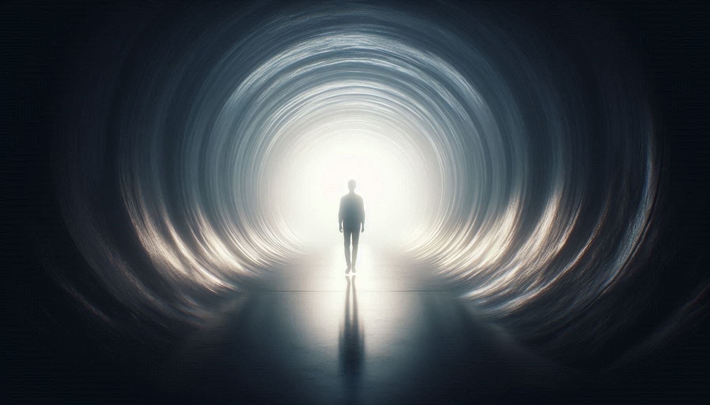

THE ULTIMATE MYSTERY OF HUMANITY

Death ennath oru sudden event alla, pakaram oru Process aanu. Heart stand-still aakunnathine Clinical Death ennu vilikkunnu. Pakshe ithinu sesham minutes-olam brain cells survive cheyyam.
| STAGE | WHAT HAPPENS? |
|---|---|
| 0-4 Mins | Oxygen loss start aakum. Brain cells live. |
| 4-10 Mins | Brain damage start aakum. Memory active. |
| 10+ Mins | Biological death. Irreversible state. |

Maranathinte vaakkil ninnu thirichu vannavar (NDE survivors) ellavarum common aayi chila karyangal parayunnundu. Ithil physical aayulla thonnalukale-kkaal spiritual aayulla element-ukal kooduthal aanu.
• Out of Body (OBE): Thante body-e thunne mukalil ninnu nokki nilkkunna thonnal.
• The Tunnel: Oru irunda tunnel-ilude sancharichu oru prathapamayulla velichathilekk (Bright Light) ethunnath.
1901-il Dr. Duncan MacDougall oru strange experiment nadathi. Oru person marikkunna aa exact moment-il body weight check cheythu. Ayal claim cheythath body-il ninnu 21 Grams kurayunnu ennaanu. Ithu "Soul" (Aathmavu)-inte weight aanennu ayal viswasichu. (Pakshe science ithu officially confirm cheythittilla).
Chila modern physics theories parayunnath nammude Consciousness (bodham) oru energy form aanennaanu. Energy-e create cheyyan-o destroy cheyyan-o kazhiyilla (Law of Conservation of Energy).
👉 Punarjanmam: Reincarnation-u proof aayi pala kutti-kalum avarude past life details (names, places) accurate aayi parayunna incidents record cheythittundu (Dr. Ian Stevenson's Case Studies).
• Religion: Karma-kku anusarichu Swargam (Heaven) or Narakam (Hell). Athallu enkil Moksha.
• Science: Death is the end of the machine. Software (mind) off aavunnu, Hardware (body) decay aavunnu.
Death ennath bhayappedenda oru karyamalla ennu NDE survivors parayunnu. Avarude parayam anusarichu athu valare Peaceful aaya oru experience aanu. Nammal ippo jeevikkunna lokam oru room aanenkil, maranam ennath aa room-ile oru Door mathramaanu. Puranth enthanennu ippo namukk ariyilla...